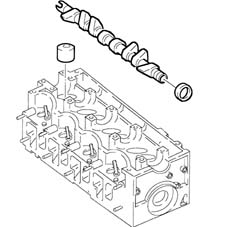

1036B overhead camshaft
- Path
- Descriptions > 10 ENGINE > 1036 TIMING SYSTEM > 1036B overhead camshaft
- Kind
- system description
- Applies to
- engines: 1.9 JTD 8v , 2.4 JTD 10v; all production periods
- Interactive page
- https://sloeber94.github.io/elrnDB-a156/en/#/3232871
Applies to: engines: 1.9 JTD 8v , 2.4 JTD 10v; all production periods
Made from cast iron, with induction temperating on the cams, operated directly by a toothed belt.
The tappets are the mechanical type, consisting of a case-hardened and phosphated steel shim in contact with the cam and used for adjusting the valve clearance.
